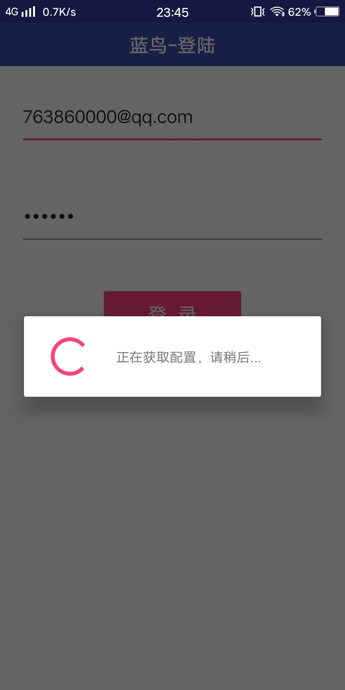
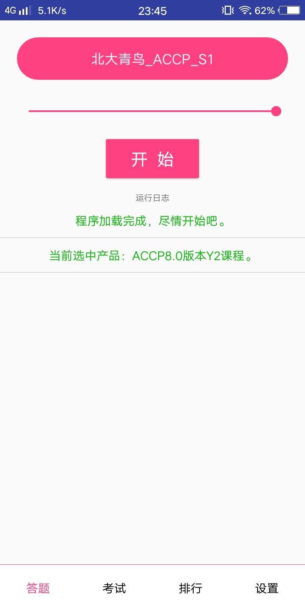
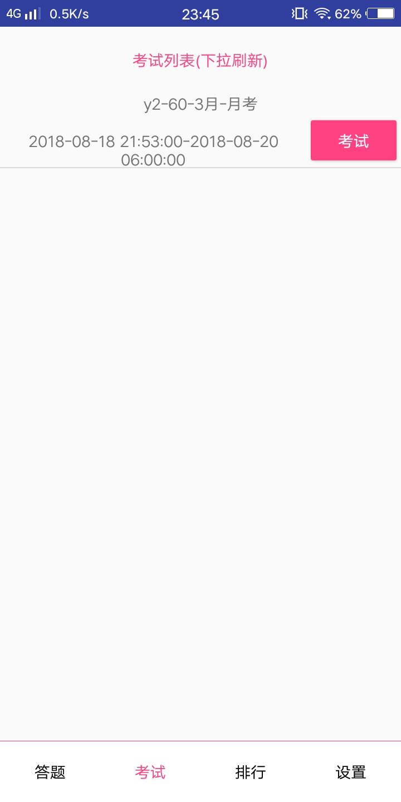
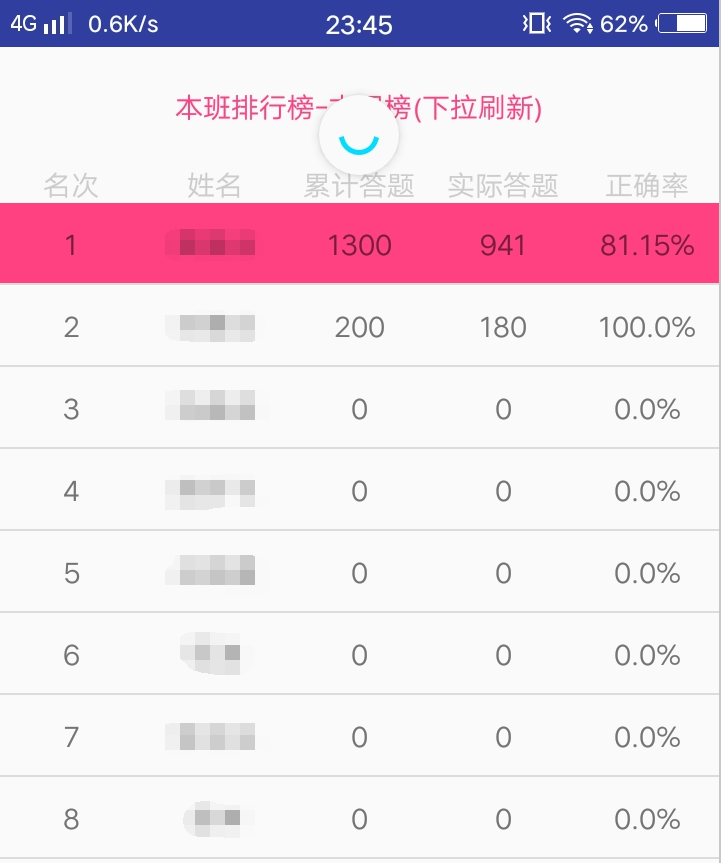
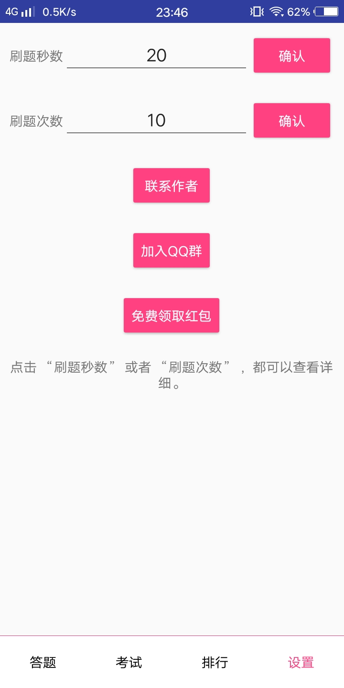

使用GitHub作为教程文档,图片加载可能会慢.
1
登录时会获取配置几秒钟,如果获取配置失败,重启程序再试.

2
进入到主页会显示当前选中的产品,如果错误请到官方版里面切换,然后再登录蓝鸟.如果提示未加群,点我查看解决方法

3
点击考试,即可进入考试页面,如果没有考试列表下拉刷新,如果还没有,看看第二步里面说的当前选中产品是否正确.

4
点击排行,即可查看本班的本周排行,不可查看其它排行,下拉可刷新.

5
点击设置,进入设置页面.如有不懂两个输入框是什么意思,点击输入框左边的标题即可.

end